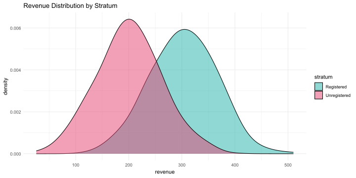
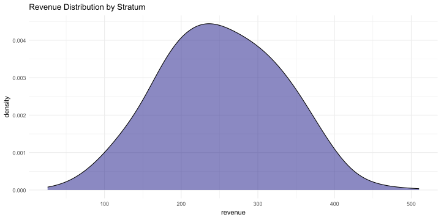

Suppose we have an online grocery store with delivery and want to increase the average revenue per user. To do this, we sent letters advertising the service to active customers.
Scenario:
Define the target metric.
Formulate a statistical hypothesis and criteria for testing it.
Record the minimum expected effect and acceptable probabilities of Type I and Type II errors.
Estimate the required group size.
Form an experimental and a control group.
Experiment.
Evaluate the results of the experiment.
Pipelines
Target metric: Average revenue per user (ARPU).
Statistical hypothesis: The average revenue per user in the experimental group is greater than in the control group.
where: - \(Z_{1 - \alpha/2}\) is the critical value for the significance level \(\alpha\), - \(Z_{1 - \beta}\) is the critical value for the power of the test \(\beta\). - \(\sigma_{\text{control}}\) and \(\sigma_{\text{exp}}\) are the standard deviations of the control and experimental groups, respectively, - \(\Delta\) is the minimum expected effect.
In practice, the exact values of distribution parameters are unknown, so estimates are used instead.
It is recommended to take group sizes somewhat larger than the calculated.
Form experimental and control groups
Let’s assume we have a total of \(10000\) users, and we will randomly assign \(1005\) users to the experimental group and \(1005\) users to the control group.
set.seed(123)n_total <-10000control_user_ids <-sample(1:n_total, sample_size)exp_user_ids <-setdiff(1:n_total, control_user_ids) %>%sample(sample_size)user_groups <-bind_rows(tibble(user_id = control_user_ids, group ="control"),tibble(user_id = exp_user_ids, group ="exp"))
Experiment
Let’s assume we have the following revenue data for the users in the experimental and control groups:
We have a loyalty program, but not all store users are registered. The behavior of registered users may differ from that of unregistered users. Information about registration in the loyalty program can increase the experiment’s sensitivity.
Covariates can be used to reduce variance and increase the sensitivity of the experiment by stratifying the sample.
Let’s:
The shares of strata in the population are equal and amount to 50%.
The average weekly revenue in the first stratum is 200 UAH, in the second stratum is 300 UAH.
The standard deviation in the first and second stratum is 62 UAH.
Strata’s visualization
set.seed(123)strata_data <-tibble(stratum =rep(c("Unregistered", "Registered"), each =1000),revenue =c(rnorm(1000, 200, 62), rnorm(1000, 300, 62)))ggplot(strata_data, aes(x = revenue, fill = stratum)) +geom_density(position ="identity", alpha =0.5, adjust =1.5) +labs(title ="Revenue Distribution by Stratum") +theme_minimal() +scale_fill_manual(values =c("Unregistered"= red_pink, "Registered"= turquoise))ggplot(strata_data, aes(x = revenue)) +geom_density(position ="identity", alpha =0.5, adjust =1.5, fill=blue) +labs(title ="Revenue Distribution by Stratum") +theme_minimal()


When users are randomly distributed across groups, the strata sizes may be unequal.
AA test with stratification
Let’s conduct an AA test with stratification to check FPR.
Stratified sampling made it possible to reduce the probabilities of Type I and Type II errors.
But we didn’t get quite the test we wanted initially.
Stratified mean
When calculating the stratified average, we calculate the simple average for each stratum separately. Then, we calculate their weighted sum, where the stratum’s weight is the stratum’s share in the population.
CUPED (Controlled-experiment Using Pre-Experiment External Data) — a method for reducing dispersion in A/B tests by adjusting the target metric Y using covariate X (pre-experiment data).
\[
Y_{cuped} = Y - \theta \cdot (X)
\]
where:
\(Y_{cuped}\) is the adjusted target metric,
\(Y\) is the original target metric,
\(\theta\) is the coefficient that minimizes the variance of \(Y_{cuped}\),